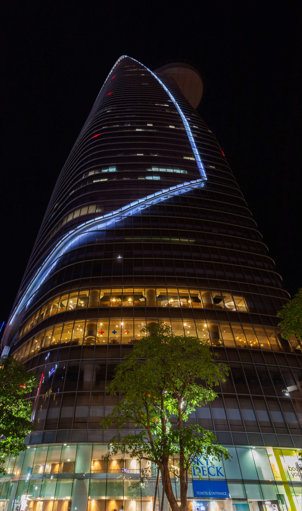
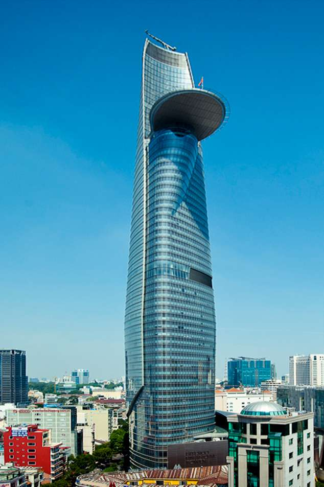
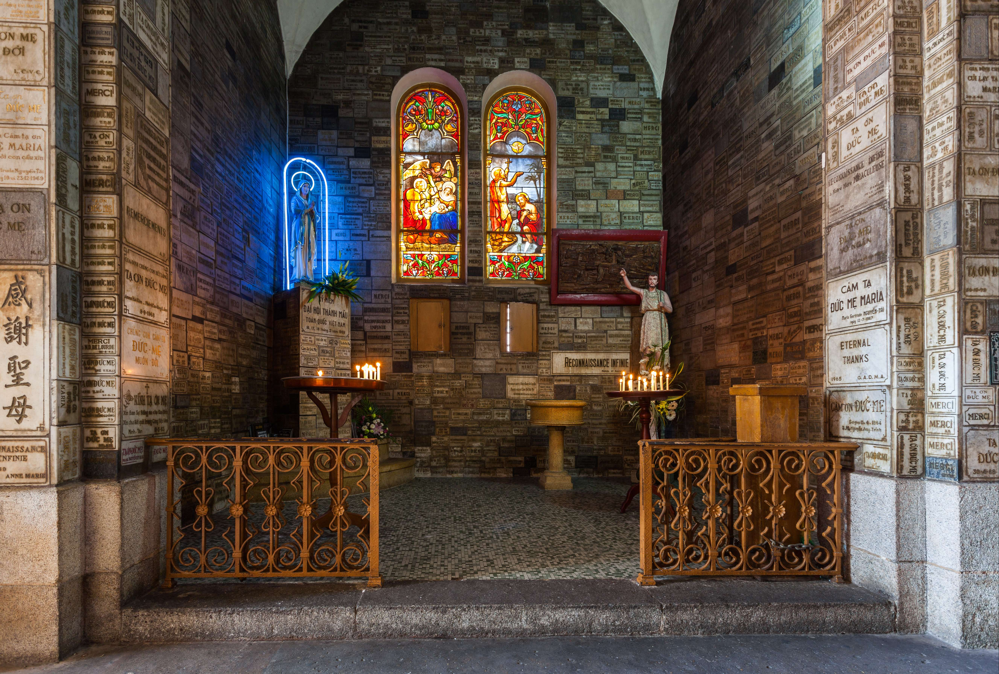

1.BITEXCO
Bitexco Financial Tower (Vietnamese: Tháp Tài chính Bitexco) is a skyscraper in Ho Chi Minh City(click here for more information..), Vietnam. At its completion in 2010, it became the tallest building in Vietnam and kept this status until January 2011, when it was surpassed by Keangnam Hanoi Landmark Tower. With 68 floors above ground and three basements, the building has a height of 262.5 metres (861 ft), making it the second tallest building in the city, fifth tallest in Vietnam, and the 263rd tallest in the world, as of the beginning of 2018.
The tower is owned by Bitexco Group, a Vietnamese multi-industry corporation, with a focus on real estate development. The building also houses the Ho Chi Minh City office of Bitexco Group, while its headquarters are in Hanoi. The tower was designed by Carlos Zapata, Design Principal and Founder of Carlos Zapata Studio, with French company AREP as architect of record. Designer Zapata, who was born in Venezuela but is based in New York City, drew inspiration for this skyscraper's unique shape from Vietnam's national flower, the Lotus. The tower was officially inaugurated on 31 October 2010. In 2013, CNN.com named the Bitexco Financial Tower one of the 25 Great Skyscraper Icons of Construction.And in 2015, Thrillist.com named the Bitexco Financial Tower the #2 Coolest Skyscraper in the World.
Bitexco Financial Tower

Bitexco Financial Tower is a mixed use project which includes office, retail, F&B and entertainment space. The tower has around 38,000 square metres of office space, from 7th to 65th floors, and a five-storey retail podium, Icon68, including food court and seven screen multiplex cinema with around 10,000 square metres from Ground to 4th Floors. At Floor 49, at height around 178 metres, there is an observation deck open to the public. Vietnam's first non-rooftop helipad is on the 52nd floor of the Bitexco Financial Tower. The helipad extends 22 meters out from the main structure. It is strong enough to carry a helicopter up to 3 tons of weight.
2.Landmark 81
Landmark 81 is a super-tall skyscraper in Ho Chi Minh City, Vietnam. The investor and primary developer for the project is Vinhomes, a Vietnamese corporation that is also the country's largest real-estate company. Landmark 81 is the tallest building in Vietnam, the second tallest building in Southeast Asia, and the 17th tallest building in the world.
The 461.15-metre (1,513.0 ft) tall, 81-story building is built on the western banks of the Saigon River in the city's Binh Thanh District, located just north of Ho Chi Minh City's historic center and to the immediate south of Saigon Bridge. The tower is at the heart of the $1.5 billion high-end mixed-use urban area called Vinhomes Central Park. The development comprises hotel and conference facilities, luxury apartments, high-end retail spaces, restaurants, bars, and a multi-story observation deck.

Landmark 81 Photo

The ground-breaking ceremony for the tower was held on 13 December 2014. In October 2017, construction reached floor 69, and with a height of 270 metres (890 ft), it surpassed the Bitexco Financial Tower to become the tallest building in Ho Chi Minh City. By January 2018, construction had finished on all floors, with only the spire and crown remaining to be built. On 10 April 2018, the last segment of the crown spire was added, architecturally completing Landmark 81. The building's base, which takes up 6 floors with a total space of 50,000 m2 (540,000 sq ft), was opened officially on 27 July 2018 to mark the 25th anniversary of its owner's parent company, Vingroup.[5] The observation deck, named Skyview, opened on 28 April 2019. The deck, spanning from floor 79 at 369.65 m (1,212.8 ft) to floor 81 at 382.65 m (1,255.4 ft), is currently Vietnam's highest observation deck. Ticket ranges from 405,000 VND (17.4 USD) for children to 810,000 VND (34.8 USD) for adults.
3.Duc Ba Church
Notre-Dame Cathedral Basilica of Saigon (Vietnamese: Vương cung thánh đường Chính tòa Đức Bà Sài Gòn or Nhà thờ Đức Bà Sài Gòn; French: Basilique-Cathédrale Notre-Dame de Saïgon), officially Cathedral Basilica of Our Lady of The Immaculate Conception (Vietnamese: Vương cung thánh đường Chính tòa Đức Mẹ Vô nhiễm Nguyên tội; French: Basilique-Cathédrale Notre-Dame de l'Immaculée Conception) is a cathedral located in the downtown of Ho Chi Minh City, Vietnam. Established by French colonists who initially named it the Church of Saigon (French: l'Eglise de Saïgon), the cathedral was constructed between 1863 and 1880. The name Notre-Dame Cathedral has been used since 1959. It has two bell towers, reaching a height of 58 meters (190 feet).
All the original building materials were imported from France. Tiles have been carved with the words Guichard Carvin, Marseille St André France, stating the district in Marseille where the tiles were produced. Some tiles are carved with the words Wang-Tai Saigon. Many tiles have since been made in Saigon to replace the tiles that were damaged by the war. There are 56 glass squares supplied by the Lorin firm of Chartres, the French town famous for the 13th century stained-glass windows of its cathedral. The cathedral foundation was designed to bear ten times the weight of the cathedral.

Duc Ba Church

Stained-glass windows